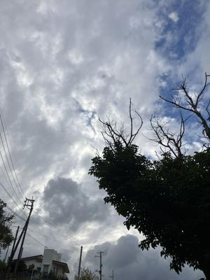

うるがいの話 ある日
最新: 子供からの便り（続き）【うるがいの話 ある日】とは 一日だけのプログです
『うるがいの話』の最新一日だけのプログで、通信料が少なく経済的だ。カニの画像をクリックすると全ての日付が載る『うるがいの話』サイトを表示します
|
|
【うるがいの話】 うるがい(ｳﾙｶﾞｲ urugai)とは、『もずくがに』の名前でとても大きくなります。 |
|---|---|
|
|
【カミマヤーの話】 猫のことを方言でマヤーといいます。カミマヤー（kamimayaa）とは、神の猫のことです。 |
|
【たながぁの音楽】 たながぁ（ﾀﾅｶﾞｰ tanagaa）とは手長えびのことで、何種類かあり大きいのは車 エビぐらいになります。 |

|
【ぶながぁの話】 ぶながぁ(ﾌﾞﾅｶﾞｰ bunagaa)とは、赤い髪の毛、赤い身体、そして身長は１ｍ２０ｃｍ ぐらい、川の蟹を食べているの目撃された。場所は沖縄県国頭郡大宜味村のと ある村僕の隣近所に住んでいる爺さんから、聞いた話です。 |
|
|
【ギーマの話】 ギーマ(giima)とは、山原の里山に咲くスズランに似た、 花を付けます。実は食べられます、 気が付くと口の周りが紫になっています。 |
2024年12月06日 (金）子供からの便り（続き）
16:18

子供の切実なる訴えたが効いたのか、オリエンテーションに会った日本
人の主婦の人が、子供のクラスに移動してきたと、きのう便りがあった
。そしてがんばるヨと。フムフム、良かった。
親父は、早朝トレーニングで、英語の本を読んでいる。『ローマの休日
』、なんと８５ページを、４日（レベル２なので）で完読。ところがだ
著者紹介
Ian McLellan Hunter
イアン・マクレラン・ハンター(1915-1991)
イギリス生まれの脚本家。映画化された『ローマの休日』が、主演のオ
ードリー・ヘプバーンが最優秀主演女優賞をとるなど注目され、ハンタ
ーにも最優秀脚本賞が与えられた。だが、実は名義をアメリカ人脚本家
のダルトン・トランボに貸しただけという事実が後に判明した。
ン？、本の後ろに著者紹介である、イマイチ理解できない、ネットで調
べた。「トランボ ハリウッドに最も嫌われた男」の映画だべ、本当の
作家は、トランボさん。ン～、この英語の本も著者をトランボさんと紹
介すべきと思った。
親父は、子供が家に置いていった「台湾の中国語をマスター 台湾華語
繁体字 ピンイン 注音対応」という本をスタディすることにした。
本日のバタフライピーの花、２２収穫。